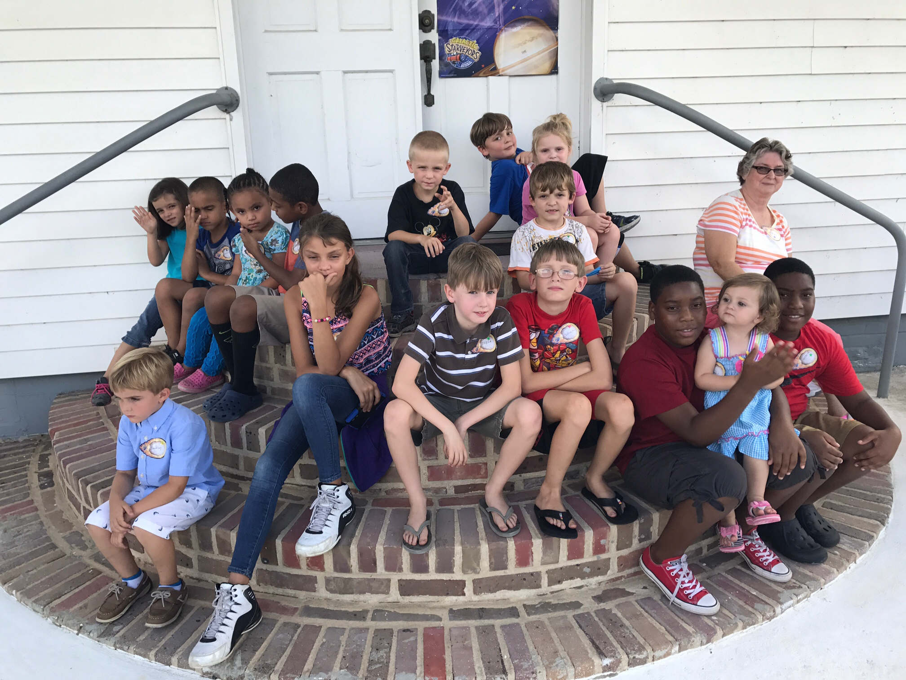
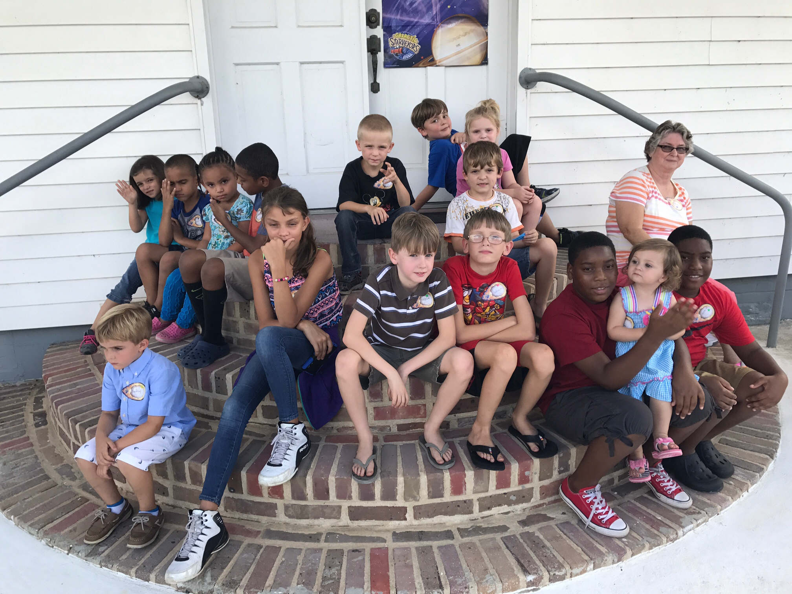

Mount Olive Mission
Our Mission is to bring glory to God and seek to build His Kingdom through our lives and through our church
This mission statement may sound like something you have heard before. We here at Mount Olive fully realize that these words are meaningless unless they are accompanied by action. But in order to take action, we must first understand what this statement means. Below is a list of tangible things we can do to help carry out this mission.
Go to church every Sunday
Share our story with others
Read our Bibles daily
Pray Daily
Serve in the church
Serve in the community
Give time and resources to oversees and local missions. Please check out mission videos on the right side of the screen
Give time and resources to local worthy causes (e.g Disaster Relief)
In theory, it is easy to be on mission, but in practice it is not quite as simple. In other words, these are not just things to be done and checked off a list. The fact is that we can go through the motion of doing all these things but not carry out the mission because we do it with the wrong motive or wrong attitude. In other words, the things on this list should be the results of a church or an individual on mission for God. We believe as a church, our responsibility is to teach the importance of having a mission and providing opportunities to carry out that mission